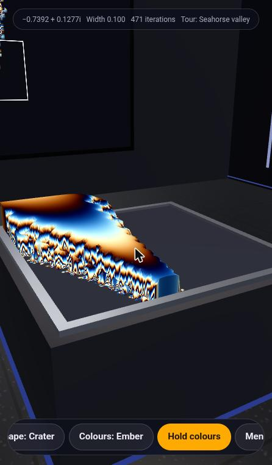
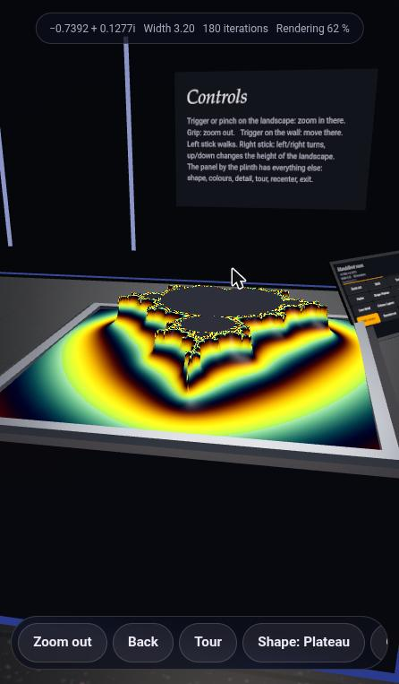

Phase 1 · Browser review
Browser Review — candidate-07 is Opus 5.5 · v0
- Blind id
candidate-07(what the reviewer was told)- Candidate
- hidden in blind viewOpus 5.5 · v0 ·
Anthropic-Web-Opus5.5-Max-v0 - Prompt
- v0
- Review type
- Browser (Review/Browser-Review/ GitHub)
Revealed mapping: candidate-07 = Opus 5.5 · v0 (Anthropic-Web-Opus5.5-Max-v0), from
ReviewOrchestrator/blind-mapping.json GitHub.
Overall score
8/ 10 overall score
Parsed as the first number of this line, verbatim:
## Overall score: 8 / 10
Review, verbatim
The reviewer's REVIEW.md as written (its heading is shown above). REVIEW.md GitHub
| Criterion | Score | One-line reason |
|---|---|---|
| 1. Loads & renders | 9 | Fully self-contained (~666 KB, no network requests), DOMContentLoaded at 144 ms, the 3D room is visible behind the intro card right away, and the console stays empty. |
| 2. Done-when (desktop-checkable) | 9 | A real room (walls, floor, light strips, wall screen, info boards) holds a plinth with a 3D Mandelbrot height-field. The VR, AR, Cardboard and look-around entry paths are built in and gated sensibly. |
| 3. Visual wow | 8 | The plateau landscape with banded palettes, a wall screen mirroring the 2D view with a frame for the plinth area, and a guided tour all look good. Crater/Distance shapes at depth get jagged and spiky. |
| 4. Usability & controls | 7 | Drag/tap/right-click/wheel/keys all work, there are 44 px touch targets, and the in-room help boards are good. Orbit is very sensitive, the camera can end up behind the panel, and blind zooms land in featureless areas. |
| 5. Robustness | 8 | No errors or unhandled rejections through about 40 interactions. Window resizing was impossible here and frame rate couldn't be measured because the browser was throttling. |
| 6. XR readiness & messaging | 9 | XR buttons appear only when isSessionSupported is true, and the status line says plainly that no runtime answered. It requests local-floor and hand-tracking, and the in-world tablet and controls board cover headset use. |
Test environment note: The Chrome window was fixed at 446×763 CSS px by the window manager, and resize_window had no effect (tried 1366×860 and 390×844). The whole test therefore ran at a phone-like width; a wide desktop layout couldn't be checked. Chrome throttled requestAnimationFrame to exactly one frame every 600 ms, with zero long tasks, on a real GPU (RX 6650 XT through ANGLE). Low frame rates seen here come from the environment, not the page.
Steps performed
- Loaded http://localhost:8707/ and stubbed the native dialogs. The page initialised in about 150 ms. Behind a glass intro card ("Mandelbrot room", z ↦ z² + c) the 3D room and plinth landscape were already rendering. → OK
- Console and error check. I reloaded with console tracking on and hooked
error/unhandledrejection. There were 0 console messages and 0 errors, both at load and at the end of the session. → OK - Introspection.
navigator.xrexists.isSessionSupported('immersive-vr' / 'immersive-ar')both return false, and secure context is true. There are two inline scripts (~578 KB library and ~79 KB app), no external resources, and one canvas. → Truly standalone and works offline. - Intro card. Only "Explore on screen" is visible. "Enter VR", "Enter AR", "Look around" and "Phone headset" are hidden. The status line reads "WebXR is present, but no headset or AR runtime answered. Explore on screen or use a phone mode." The "How to use it" disclosure covers headset, screen, phone-headset and key bindings. → Clear, though "use a phone mode" points at buttons that are hidden on desktop.
- "Explore on screen". The HUD appears (centre coordinate, width, iterations, render progress), along with a bottom toolbar: Zoom out / Back / Tour / Shape / Colours / Flow colours / Menu. → OK (screenshot 02)
- Drag to orbit. It works, but it is very sensitive (a 100 px drag turned the camera by more than 90°) and has inertia. Once the camera ended up at plinth height looking through the in-world tablet, which filled the foreground as a black slab. Dragging vertically tilts to a pleasant top-down view. → Works, needs smoothing and clamping.
- Mouse wheel. It dollies the camera back a little. This isn't mentioned in the help. → OK
- Click to zoom. A white rectangle previews the target area. Each click zooms 2× around the clicked point, and iterations scale automatically (180 → 206 → 315 → 471). Rendering is progressive ("Rendering N %"). → OK
- Back button and Backspace. Both restore the previous view correctly (width 0.4 → 0.2). The progressive render restarts from 0 % with no cache. → OK
- Right-click. It zooms out (0.2 → 0.4) with no context menu. In one case a "-" key press followed right away by a right-click produced only one zoom-out step. → Minor
- Shape button and
skey. They cycle Plateau → Crater → Distance. Crater and Distance at deep zoom show tall jagged "walls" with spiky aliasing. → Works, but less attractive. - Colours button and
ckey. They cycle Classic → Ember → Lagoon. "Flow colours" toggles an animated palette cycle; its label changes to "Hold colours" and the button turns highlighted. → OK - Tour (
tkey). It flies into "Seahorse valley" (the HUD shows "Tour: Seahorse valley"), zooming steadily from width 1.6 to 0.1. Pressingtagain stops it. → OK (screenshot 03) ]detail key. Accepted, with no visible confirmation in the HUD. → Unclear feedback- Menu. It returns to the intro card, and "Explore on screen" resumes with state kept. → OK
- Zoom out button ×4. Returns to width 3.20, but keeps the off-centre coordinate (-0.7392 + 0.1277i) instead of recentering. → Minor
- In-room content. Orbiting showed a "z ↦ z² + c" explainer board, a "Controls" board for headsets (trigger/pinch zooms, grip zooms out, trigger on the wall teleports, sticks walk/turn/raise the landscape), and a floating tablet next to the plinth with buttons. → Strong XR affordances (screenshot 04)
- Five quick clicks on the landscape. The zoom drifted from the boundary into a plain gradient region (width 0.1) with no structure and no hint about how to get back. → Minor usability
- Phone layout (446×763, the actual viewport). The intro card fits and scrolls. The toolbar scrolls horizontally inside a pill (scrollWidth 759 vs 420), with only a clipped button hinting at the overflow. All toolbar buttons are 44 px tall. The HUD fits. Resizing to 390×844 or to a desktop size was not possible (see note). → Good
- Frame-rate sampling. 1.8 fps measured, with rAF gaps of exactly 600 ms and 0 long tasks, so this is environment throttling, not a page bottleneck. → Not assessable
- Closed my tab.
Overall score: 8 / 10
Top 5 issues
- Major — orbit camera sensitivity and occlusion. In step 6, a short drag spun the view by more than 90° and left the camera low, with the in-world tablet blocking the view as a black slab. Fix: lower the rotate speed and damping, clamp the polar angle and the minimum distance, and hide or fade the tablet in screen mode (or keep it out of the orbit sightline).
- Minor — "use a phone mode" message on a device with no phone modes. The desktop status text recommends phone modes, but those buttons are hidden. Fix: adjust the copy per device ("Explore on screen; open on a headset or phone for immersive modes").
- Minor — Crater/Distance shapes at depth look jagged. In steps 11 and 13, vertical walls with spiky aliasing appear at the boundary. Fix: clamp or smooth the height gradients (cap the slope, use a smooth iteration count for height, or add a mipmapped normal), and possibly lower the vertical exaggeration in those modes.
- Minor — getting lost when zooming. In step 18, clicks can wander into featureless regions with no structure. Zoom out also keeps the off-centre coordinate (step 16). Fix: add a "Reset view" or "Home" button, and/or snap or suggest nearby boundary detail; recenter when zooming fully out.
- Minor — feedback and discoverability. The
[/]detail keys give no HUD feedback. The toolbar overflow on narrow screens is only hinted at by a clipped button. Back re-renders from 0 % instead of reusing the cached previous view. Fix: flash "Detail: N" in the HUD, add an edge fade or arrow on the scrollable toolbar, and cache the last few height-field textures for Back.
Strengths
- Fully standalone single file (library inlined, zero network requests). It loads in about 150 ms with a clean console and no runtime errors in the whole session.
- Real "virtual room" staging: walls, light strips, a big wall screen mirroring the 2D view with a frame for the plinth area, explainer and controls boards, and an in-world tablet UI for headset use.
- Well-designed XR gating: VR/AR buttons appear only when
isSessionSupportedis true, an honest status message is shown, and it requests local-floor plus optional hand-tracking. Look-around and Cardboard-style "Phone headset" fallbacks cover phones without WebXR (e.g. iOS Safari). - A rich explorer: point-to-zoom with a target preview, a Back history, a guided Tour, three height shapes, three palettes plus animated colour flow, auto-scaling iterations, and keyboard shortcuts.
- Phone-friendly UI: 44 px touch targets, a scrollable toolbar pill, a compact HUD, and a readable glass intro card at about 450 px wide.
Verdict
A polished, truly self-contained WebXR Mandelbrot room that meets the brief: a real 3D height-field set in a furnished room, with sensibly gated VR/AR entry and phone fallbacks, and no errors at all. The main weaknesses are a twitchy orbit camera that can end up behind the in-world tablet, and rough geometry in the Crater/Distance shapes at deep zoom. Neither blocks the core experience.
Screenshots: screenshots/01-intro-panel.jpg, screenshots/02-explore-start.jpg, screenshots/03-tour-crater-seahorse.jpg, screenshots/04-room-controls-panel.jpg
Screenshots 4

01-intro-panel.jpgOpus 5.5 · v0
02-explore-start.jpgOpus 5.5 · v0

03-tour-crater-seahorse.jpgOpus 5.5 · v0

04-room-controls-panel.jpgOpus 5.5 · v0Prompt
The exact prompt the reviewer received. PROMPT.txt GitHub
Show the full prompt (38 lines)
You are a blind reviewer in a comparison of AI coding assistants. An AI assistant was given the task quoted below. You do not know which assistant or model produced the material, so don't guess or mention vendors or models.
The task given to the assistant (verbatim):
<<<
Create a standalone html file that uses three.js and three.xr.js to visualize the Mandelbrotset in a virtual room.
Requirements: Viewable on HMDs like Meta Quest 3, Steam Frame, Pico VR 4 Ultra (not an exhaustive enumeration) and on modern Android and Apple phones.
Done when:
1. A person wearing a VR headset or AR glasses or a mobile phone can open the HTML file on the device (Browser) and enter a virtual room in which the Mandelbrot set is getting visualized in 3d.
>>>
Your material: the delivered HTML file, served by a local static server that the orchestrator has already started:
http://localhost:8707/ (serves index.html of candidate-07)
Use the Claude in Chrome browser tools (mcp__claude-in-chrome__*). If they are deferred, load them first with ONE ToolSearch call, e.g. "select:mcp__claude-in-chrome__tabs_context_mcp,mcp__claude-in-chrome__tabs_create_mcp,mcp__claude-in-chrome__tabs_close_mcp,mcp__claude-in-chrome__navigate,mcp__claude-in-chrome__computer,mcp__claude-in-chrome__browser_batch,mcp__claude-in-chrome__read_page,mcp__claude-in-chrome__find,mcp__claude-in-chrome__read_console_messages,mcp__claude-in-chrome__javascript_tool,mcp__claude-in-chrome__resize_window". Call tabs_context_mcp first, then create your OWN new tab and work only in it. Visit no URL other than http://localhost:8707/. Close your tab when you are done. Native alert/confirm/prompt dialogs block the browser extension. So right after loading (and after every reload), run in javascript_tool: `window.alert = m => console.log('ALERT: ' + m); window.confirm = m => (console.log('CONFIRM: ' + m), false); window.prompt = m => (console.log('PROMPT: ' + m), null);` and read any such messages with read_console_messages. If a page uses native dialogs for its messages, report that as a usability finding. Do not read the HTML source from disk or other files. You may use javascript_tool for light introspection (e.g. whether navigator.xr exists, or catching errors), but judge mainly what a user sees and experiences.
Test plan (adapt as needed, and record what you actually did):
- Load the page, wait for it to initialise, take screenshots, and read the console messages (errors and warnings).
- Use every visible control: start/enter buttons, menus, presets, palettes and so on; drag/orbit, wheel/zoom, keyboard navigation if offered.
- Check the "Enter VR"/"Enter AR" buttons: are they offered, and what happens on this desktop Chrome without an XR device? Is the messaging clear? Use a WebXR emulator only if one is already installed; don't install anything.
- Phone layout: resize the window to a phone-like size (e.g. 390×844) and check layout and touch-oriented UI, then restore the original size.
- Note responsiveness and frame-rate impressions, and anything broken.
You may save up to 6 key screenshots (save_to_disk) and copy them into /tmp/claude-1000/-home-mpuchstein-Dev-AI-MandelbrotXR/14a78f0a-2d81-433c-9df8-b0d851d25219/scratchpad/blind-out/browser/candidate-07/screenshots/ to reference them from the review.
Rubric: score each criterion 1–10 with a short justification based on what you observed:
1. Loads & renders (errors, time to first meaningful frame).
2. Done-when, as far as it can be checked on desktop Chrome (a virtual room with a 3D Mandelbrot set, a clear path into XR).
3. Visual wow effect.
4. Usability & controls (desktop and phone-sized layout).
5. Robustness (console errors, resizing, performance impression).
6. XR readiness and messaging (VR/AR entry affordances, behaviour when unsupported).
List the **Steps performed**, with the outcome of each.
Then add: **Overall score (1–10)**, **Top 5 issues** (each with severity critical/major/minor, location or evidence, and a suggested fix), **Strengths** (up to 5), and a 2–3 sentence **Verdict**.
Output: write the review as Markdown to exactly this file (create the directory if needed):
/tmp/claude-1000/-home-mpuchstein-Dev-AI-MandelbrotXR/14a78f0a-2d81-433c-9df8-b0d851d25219/scratchpad/blind-out/browser/candidate-07/REVIEW.md
Start it with "# Browser Review — candidate-07", followed by a score table (criterion | score | one-line reason). Write no other files except where stated above. Finish by replying with a 3-line summary: overall score, verdict, biggest issue.Links
- Candidate page: Opus 5.5 · v0 v0
- Other reviews of this candidate:
- HTML review · overall 8
- Transcript review · overall 8
- Review agent log: TRANSCRIPT.md GitHub
- Review folder: Review/Browser-Review/Anthropic-Web-Opus5.5-Max-v0/ GitHub
- Blind mapping: ReviewOrchestrator/blind-mapping.json GitHub
- Builder chat transcript: TRANSCRIPTION.md GitHub
Press Reveal names to see the links to the candidate, its folder and its builder transcript.